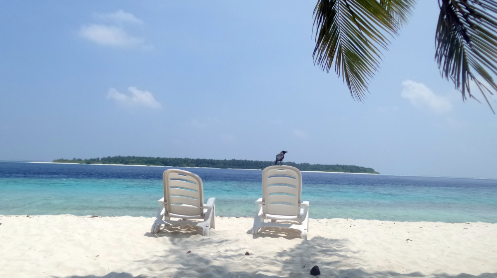
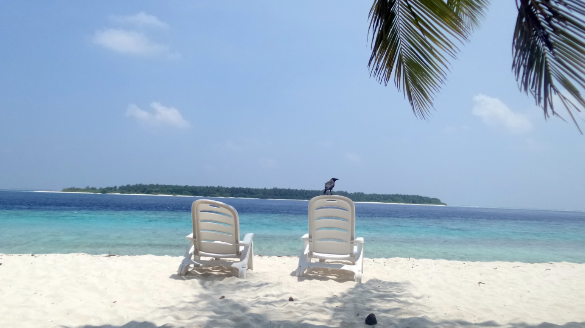
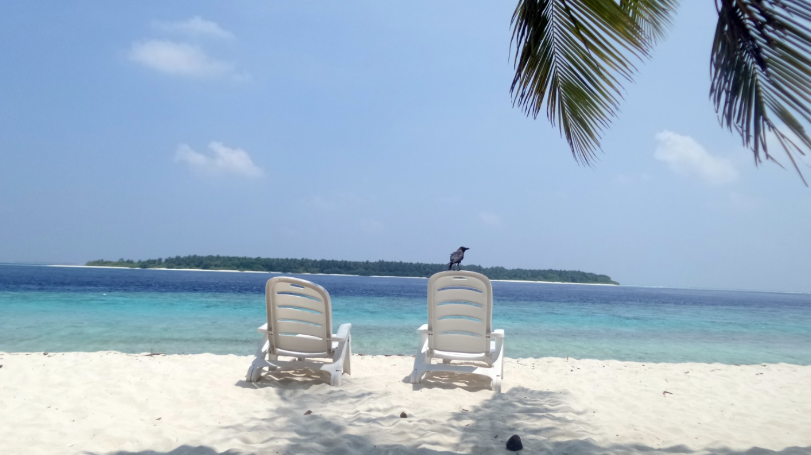

U pet smo došli na ručak, a u šest zalazi sunce. Duško je kasnio, pa je pored nas stajala kuvarica — u svoj onoj odeći, sa maramom i štapom — i terala vrane koje su se obrušavale da kradu hranu.
Možeš li zamisliti tu scenu: mi jedemo, a ona pored nas mlati štapom i tera vrane. Meni je bilo baš smešno.
Često te vrane kradu, pa se gosti razgalame, a Maldivljani se veselo kikoću. Iznova i iznova im je smešno.
Kad je Petar završio sa jelom, kuvarica je našla sebi zamenu, pa je njega obučavala kako da mlati štapom i viče „ššš“, pa ih je onda on terao.

Kad Sandra krene u novi kraj sveta, vaš inbox prvi sazna. Prijavite se i stižu vam sve nove priče mejlom.